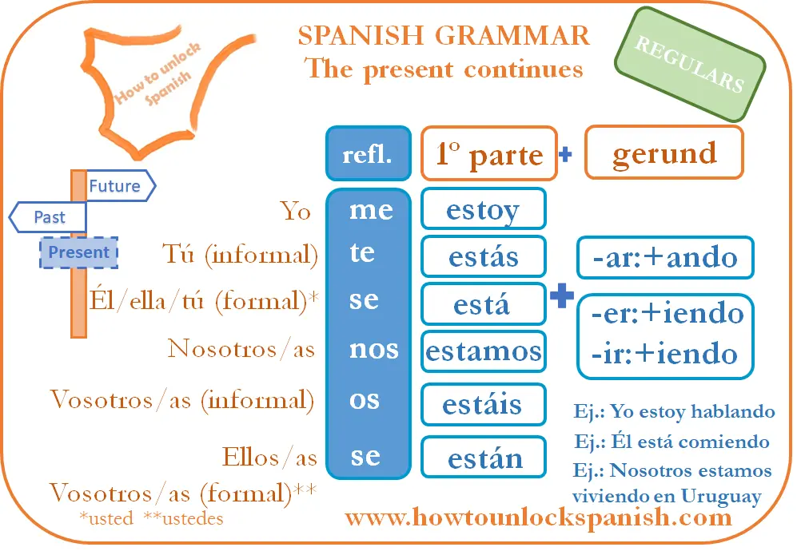

Presente y Pasado Continuo
-
Presente Continuo
Las estructuras del presente continuo Igual que en otros tiempos verbales del inglés, el present continuous tiene una estructura específica para el modo afirmativo, negativo e interrogativo.
Afirmación: Sujeto + verbo to be + verbo en gerundio + complemento
Negación: Sujeto + verbo to be + not + verbo en gerundio + complemento
Interrogación: Verbo to be + sujeto + verbo en gerundio + complemento + ?
- 
-
Pasado Continuo
El pasado continuo o past continuous del inglés es el tiempo verbal que señala acciones o situaciones que sucedieron en el pasado y cuya duración tuvo o tiene relevancia. La característica principal para usarlo e identificarlo dentro de una oración es cuando el verbo principal tiene la terminación -ing (-ando -endo en español) y se encuentra precedido de los verbos auxiliares was o were.
-